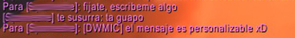

DWMIC: Don't Whisper Me In Combat
Descripción
>Addon created to avoid conversations while you are trying to kill somebody. The addon sends a whispher to the original whisper sender an automatic message which could be personalized. The addon can be disabled whitout logging out, for example, when you are boring while farming. 
- To turn on/off the addon: /dwmic toggle
- To personalize the message: /dwmic what you want to say
- To restore the original message: /dwmic reset
List of changes:
2.5
- Whispers' list available.
- Little bugs resolved.
- French localization available. (Thanks to Ckeurk)
- Message personalization implemented.
- Toggle function implemented.
- Basic features implemented.
Author
Addon created by threkk (Elæsandrøs@C'Thun-Eu in game).
Email: threkk AT gmail DOT com.
Twitter: @threkk